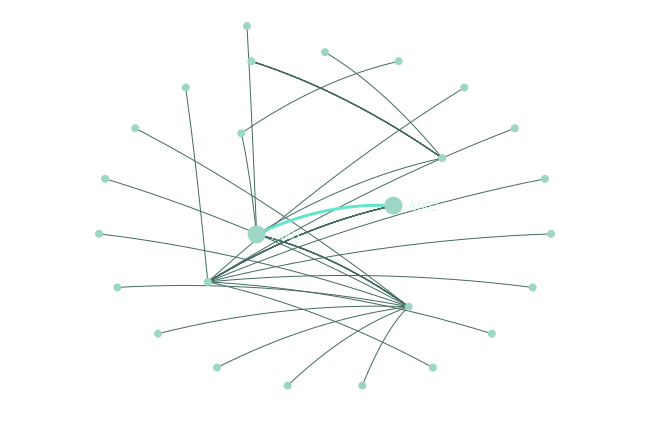
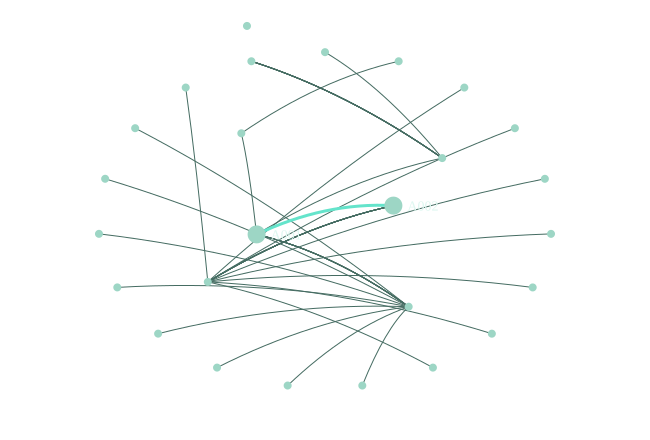
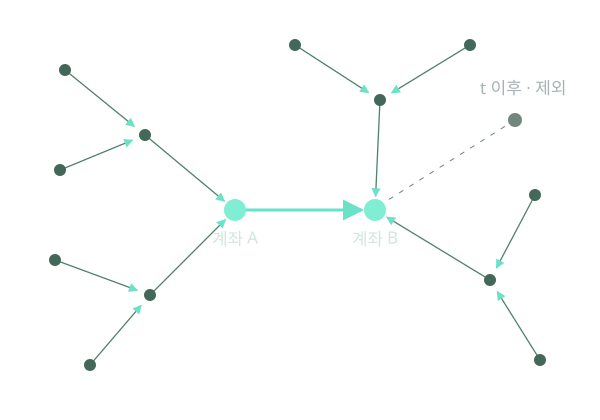

자금세탁 거래 탐지 · 연구 소개
거래 한 건에서,
연결된 거래로.
금액과 시간에 계좌의 관계를 더하면,
드문 자금세탁 거래를 더 잘 찾을까?
거래 특징 모델과 그래프 신경망을
같은 데이터에서 비교한 예비 연구.
IBM AML HI-Small 합성 데이터
전체 5,078,345건 · 자금세탁 라벨 약 0.10%
나예진 · 권범 / 2026 연구 원고

점은 계좌, 선은 계좌 사이의 거래.원본 CSV에서 추출한 26계좌 · 48거래. 청록은 대상 거래이며 모델 예측이 아닙니다.
드래그 회전 · Shift+휠 확대 · 더블클릭 복원
무엇을 모델에 보여줬는가
같은 거래 특징에,
계좌의 관계를 더하다.
네 모델의 출발점은
동일한 45차원 거래 특징입니다.
- XGBoost · Edge-MLP
- 금액·시각·통화·결제 방식 등 거래 자체의 특징.
- GIN · PNA
- 거래 특징과 함께, 계좌로 들어온 거래를
2층까지 모아 만든 계좌 표현.
GIN: GINEConv · PNA: 평균·최대·최소·표준편차 집계.
노드 입력은 상수 · 계좌 ID 임베딩 없음.

주변 정보는 수취 방향으로 모입니다.
표시용 최근 8개 이웃 추출 · 학습의 층별 최대 10개 샘플링과 구분.
평가에 앞서 고정한 조건
미래를 보지 않고,
다음 거래를 평가하다.
대상 거래 시각 t 이하의 이웃만
사용하고 날짜순으로 분할했습니다.
- 학습
- 9.1–6
- 검증
- 9.7–8
- 테스트
- 9.9–18
전처리 통계는 학습 구간에서만 계산.
검증 AP로 모델, 검증 F1로 임곗값을
선택한 뒤 테스트에 고정했습니다.
2022년 9월 데이터 · 동일 시각 이웃은 허용.
실제 운영에서의 정보 가용성은 별도 검증 대상.

아직 발생하지 않은 거래는 입력에서 제외.기준 시각 2022.09.09 01:54 · 점선은 이후 거래. 금액·시각·라벨은 CSV 원본값.
테스트 863,900건에서의 비교
점수는 높아졌다.
조사량도 같았을까?
PNA의 전체 AP가 가장 높았습니다.
하지만 모델마다 경보 수가 달랐습니다.
검증에서 선택한 임곗값을 적용하면
검토할 거래는 1,278건부터 3,525건까지.
탐지 성능과 조사 부담을 함께 봐야 합니다.
AP: 점수 순위 전반의 탐지 품질을 요약하는 지표.
경보 수: 각 모델의 고정 임곗값을 넘은 거래 수.
| 모델 | 테스트 AP | 경보 수 |
|---|---|---|
| XGBoost | 17.83% | 1,278건 |
| Edge-MLP | 17.62% | 3,525건 |
| GIN | 40.71% | 2,533건 |
| PNA | 55.59% | 1,561건 |
AP와 경보 수는 서로 다른 지표입니다.
임곗값은 테스트 결과에 맞춰 다시 조절하지 않았습니다.
조사할 거래 수를 고정하면
같은 864건,
다른 탐지 결과.
모델별 점수 상위 864건만 확인할 때,
PNA는 자금세탁 라벨 701건을 찾았습니다.
모든 막대의 전체 길이는 같습니다.
색이 채워진 부분이 그 안에서 찾은
자금세탁 라벨의 수입니다.
864건 ≈ 전체 테스트 거래의 상위 0.1%.
앞 장의 임곗값 평가와 별도로 수행한 순위 평가.
864건 중 자금세탁 라벨 수
같은 예산 안에서의 비교 · 논문 4.2절
전체 평균을 다시 들여다보니
평균 점수 뒤에는
다른 분포가 있었다.
후반의 거래는 테스트의 0.13%.
그 안에 양성의 40.66%가 몰려 있었습니다.
기간을 바꾸면 AP 순위도 달라집니다.
표본 수와 양성률이 크게 다른 결과를
일반화 성능의 개선으로 단정할 수 없습니다.
후반 양성률 59.12% · 전체 테스트 양성 1,611건.
기간을 선택해 표본과 지표를 함께 비교하세요.
- 전체 거래
- 862,792건
- 양성률 · 956건
- 0.11%
기간별 표본과 AP · 논문 표 1, 4.3절
이번 비교가 말해주는 것
결과는 확인했다.
원인은 더 검증해야 한다.
이 조건에서는 PNA가 앞섰습니다.
집계 방식만의 효과로 볼 수는 없습니다.
PNA의 파라미터는 GIN의 약 4.4배.
학습·탐색 예산도 같지 않았습니다.
다음은 규모와 예산을 맞춘 비교,
여러 초기값의 반복, 별도 자료에서의 평가.
합성 데이터 · 단일 실행의 예비 비교.
원고: 「IBM AML 합성 데이터에서 거래 특징 기반 모델과
그래프 신경망의 자금세탁 거래 탐지 성능 비교」
한 거래의 점수에서, 평가 조건의 이해까지.다음 실험은 이 연결을 더 엄밀하게 확인하는 과정입니다.